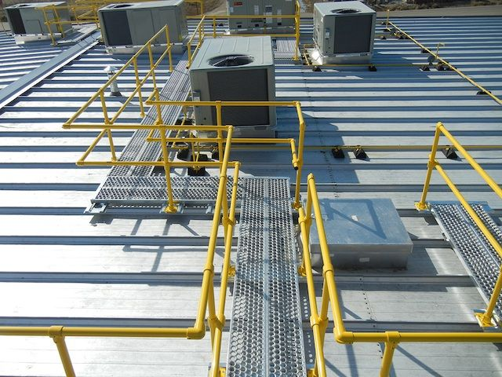

Dimensi
Panjang, lebar, dan elevasi disesuaikan dengan jalur akses serta pengukuran lokasi.

Jalur akses besi yang kokoh dan aman untuk memudahkan pergerakan di area kerja maupun sekitar mesin, dirancang mengikuti kondisi lokasi.
Panjang, lebar, dan elevasi disesuaikan dengan jalur akses serta pengukuran lokasi.
Material dan rancangan struktur ditentukan berdasarkan bentang, beban rencana, dan kondisi pemasangan.
Pilihan permukaan pijak dan railing dapat disesuaikan dengan tingkat keselamatan yang dibutuhkan.
Jalur untuk membantu operator menjangkau area mesin saat inspeksi dan perawatan.
Platform akses yang dirancang mengikuti alur kerja dan tata letak fasilitas produksi.
Akses penghubung pada area kerja yang memerlukan jalur pijak khusus sesuai kondisi lapangan.
Konsultasikan pengukuran, kebutuhan beban, dan rancangan jalur akses Anda.